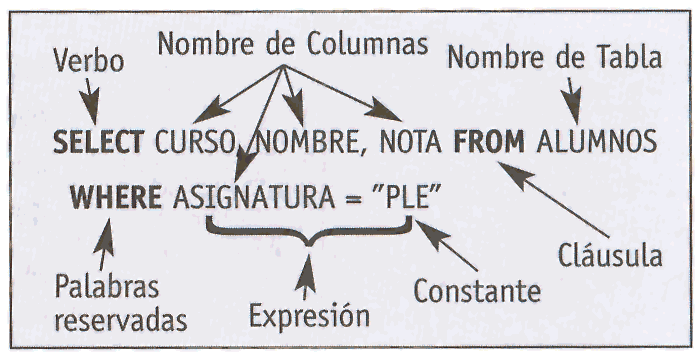

Bases de datos simples
Bases de datos en Access

Una base de datos es una herramienta para recopilar y organizar información. Las bases de datos pueden almacenar información sobre personas, productos, pedidos u otras cosas. Muchas bases de datos comienzan como una lista en una hoja de cálculo o en un programa de procesamiento de texto. A medida que la lista aumenta su tamaño, empiezan a aparecer redundancias e inconsistencias en los datos. Cada vez es más difícil comprender los datos en forma de lista y los métodos de búsqueda o extracción de subconjuntos de datos para revisión son limitados. Una vez que estos problemas comienzan a aparecer, una buena idea es transferir los datos a una base de datos creada con un sistema de administración de bases de datos (DBMS), como Access.
Una base de datos computarizada es un contenedor de objetos. Una base de datos puede contener más de una tabla. Por ejemplo, un sistema de seguimiento de inventario que usa tres tablas no son tres bases de datos, sino una base de datos que contiene tres tablas. Salvo que haya sido específicamente diseñada para usar datos o códigos de otro origen, una base de datos de Access almacena sus tablas en un solo archivo, junto con otros objetos como formularios, informes, macros y módulos. Las bases de datos creadas en el formato Access 2007 (que también usan Access 2016, Access 2013 y Access 2010) tienen la extensión de archivo .accdb y las bases de datos creadas en formatos anteriores de Access tienen la extensión de archivo .mdb. Puede usar Access 2016, Access 2013, Access 2010 o Access 2007 para crear archivos en formatos de archivo anteriores (por ejemplo, Access 2000 y Access 2002-2003).
La primera vez que se escuchó el término base de datos fue en un congreso celebrado en California en 1963. Una base de datos es un cúmulo de información que se encuentra reunida o estructurada.Sus orígenes provienen de la antigüedad, donde ya existían bibliotecas y toda clase de registros, también la utilizaban para recoger información sobre las cosechas.
Edgar Frank Codd
En la época de los 80 se creó un lenguaje de consultas de acceso a bases de datos que permite realizar consultas para recuperar información de interés de una base de datos y realizar cambios de manera sencilla; aparte de examinar grandes cantidades de información y deja detallar varios tipos de operaciones frente a la misma información.Durante este tiempo SQL comenzó a ser el modelo de la industria; las bases de datos relacionales con su sistema de tablas pudieron competir con las bases jerárquicas y de red.
En los años 90, investigaron las bases de datos orientadas en objetos. Han tenido bastante éxito a la hora de ejecutar datos complejos en los terrenos donde las bases de datos relacionales no han podido desenvolverse de manera eficaz. Así se crearon herramientas como el Excel y Access.Así se creó la tercera generación de sistemas gestores de bases de datos.En esta época también, se empezó a incorporar nuevas expresiones regulares, consultas recursivas y algunas características orientadas a objetos. Además se creó la oportunidad de que SQL se pueda utilizar simultáneamente XML, y se determina como importar y guardar datos XML en una base de datos SQL.
Access es una palabra inglesa que puede traducirse como “acceso”. El uso más habitual del término en nuestra lengua está vinculado a un programa informático desarrollado por la empresa estadounidense Microsoft. Access, o Microsoft Access, es un software que permite gestionar una base de datos. El programa forma parte de Microsoft Office, un paquete de aplicaciones que permiten realizar tareas de oficina. La primera versión de Access fue lanzada en 1992. A partir de entonces se sucedieron diversas versiones que incrementaron la funcionalidad del software. Actualmente, Access es un programa utilizado para la gestión de datos a través de informes y consultas, que incluso puede importar información creada con otros software (como Microsoft Excel).ACCESS Co., Ltd. es el nombre de una compañía japonesa que abrió sus puertas en 1974. Esta empresa se dedica al desarrollo de programas informáticos para consolas de videojuegos, teléfonos celulares (móviles) y otros dispositivos.
Una tabla de base de datos es similar en apariencia a una hoja de cálculo en cuanto a que los datos se almacenan en filas y columnas. Por ende, es bastante fácil importar una hoja de cálculo en una tabla de base de datos. La principal diferencia entre almacenar los datos en una hoja de cálculo y almacenarlos en una base de datos es la forma en la que están organizados los datos.
Para aprovechar al máximo la flexibilidad de una base de datos, los datos deben organizarse en tablas para que no se produzcan redundancias. Por ejemplo, si quiere almacenar información sobre los empleados, cada empleado debe especificarse solo una vez en la tabla que está configurada para los datos de los empleados. Los datos sobre los productos se almacenarán en su propia tabla y los datos sobre las sucursales se almacenarán en otra tabla.
Los formularios permiten crear una interfaz de usuario en la que puede escribir y modificar datos. Los formularios a menudo contienen botones de comandos y otros controles que realizan distintas tareas. Puede crear una base de datos sin usar formularios con tan solo modificar los datos en las hojas de datos de la tabla. Sin embargo, la mayoría de los usuarios de bases de datos prefieren usar formularios para ver, escribir y modificar datos en las tablas. Puede programar botones de comandos para determinar qué datos aparecen en el formulario, abrir otros formularios o informes, o ejecutar otras tareas. Por ejemplo, puede tener un formulario llamado "Formulario de cliente" en el que trabaja con los datos de los clientes. El formulario de cliente puede tener un botón que abra un formulario de pedido en el que puede especificar un pedido nuevo para el cliente.
Fundamentos de la normalización La normalización es el proceso de organizar los datos de una base de datos. Se incluye la creación de tablas y el establecimiento de relaciones entre ellas según reglas diseñadas tanto para proteger los datos como para hacer que la base de datos sea más flexible al eliminar la redundancia y las dependencias incoherentes. Los datos redundantes desperdician el espacio de disco y crean problemas de mantenimiento. Si hay que cambiar datos que existen en más de un lugar, se deben cambiar de la misma forma exactamente en todas sus ubicaciones. Un cambio en la dirección de un cliente es mucho más fácil de implementar si los datos sólo se almacenan en la tabla Clientes y no en algún otro lugar de la base de datos. Hay algunas reglas en la normalización de una base de datos. Cada regla se denomina una "forma normal". Si se cumple la primera regla, se dice que la base de datos está en la "primera forma normal". Si se cumplen las tres primeras reglas, la base de datos se considera que está en la "tercera forma normal". Aunque son posibles otros niveles de normalización, la tercera forma normal se considera el máximo nivel necesario para la mayor parte de las aplicaciones.
Las consultas de paso a través de SQL se utilizan para enviar directamente los comandos a un servidor de base de datos ODBC. Al usar una consulta de paso a través de SQL, trabaja directamente con las tablas de servidor en lugar de hacer que el motor de base de datos Microsoft Jet procese los datos.En la ficha Crear, haga clic en Diseño de la consulta en el grupo Otro.Haga clic en Cerrar en el cuadro de diálogo Mostrar tabla sin agregar ninguna tabla o consulta. Ahora nos vamos a centrar en la “R” de CRUD, es decir, en cómo recuperar la información que nos interesa de dentro de una base de datos, usando para ello el lenguaje de consulta o SQL. Ya nos preocuparemos luego de cómo llegamos a introducir los datos primeramente.
Para realizar consultas sobre las tablas de las bases de datos disponemos de la instrucción SELECT. Con ella podemos consultar una o varias tablas. Es sin duda el comando más versátil del lenguaje SQL.
Existen muchas cláusulas asociadas a la sentencia SELECT (GROUP BY, ORDER, HAVING, UNION). También es una de las instrucciones en la que con más frecuencia los motores de bases de datos incorporan cláusulas adicionales al estándar.

El lenguaje de consulta estructurado o SQL (por sus siglas en inglés Structured Query Language) es un lenguaje declarativo de acceso a bases de datos relacionales que permite especificar diversos tipos de operaciones en ellas. Una de sus características es el manejo del álgebra y el cálculo relacional que permiten efectuar consultas con el fin de recuperar de forma sencilla información de interés de bases de datos, así como hacer cambios en ella.
| SENTENCIA | DESCRIPCIÓN | ||
|
Recupera datos de la base de datos. Añade nuevas filas de datos a la base de datos. Suprime filas de datos de la base de datos. Modifica datos existentes en la base de datos. |
.
Como ya he comentado este modelo es solo y exclusivamente un método del que disponemos para diseñar estos esquemas que posteriormente debemos de implementar en un gestor de BBDD (bases de datos). Este modelo se representa a través de diagramas y está formado por varios elementos.
Este modelo habitualmente, además de disponer de un diagrama que ayuda a entender los datos y como se relacionan entre ellos, debe de ser completado con un pequeño resumen con la lista de los atributos y las relaciones de cada elemento.
Las entidades representan cosas u objetos (ya sean reales o abstractos), que se diferencian claramente entre sí.
Los atributos definen o identifican las características de entidad (es el contenido de esta entidad). Cada entidad contiene distintos atributos, que dan información sobre esta entidad. Estos atributos pueden ser de distintos tipos (numéricos, texto, fecha...).
En el contexto de bases de datos relacionales, una clave foránea o clave ajena (o Foreign Key FK) es una limitación referencial entre dos tablas. La clave foránea identifica una columna o grupo de columnas en una tabla (tabla hija o referendo) que se refiere a una columna o grupo de columnas en otra tabla (tabla maestra o referenciada). Las columnas en la tabla referendo deben ser la clave primaria u otra clave candidata en la tabla referenciada.
Los valores en una fila de las columnas referendo deben existir solo en una fila en la tabla referenciada. Así, una fila en la tabla referendo no puede contener valores que no existen en la tabla referenciada. De esta forma, las referencias pueden ser creadas para vincular o relacionar información. Esto es una parte esencial de la normalización de base de datos. Múltiples filas en la tabla referendo pueden hacer referencia, vincularse o relacionarse a la misma fila en la tabla referenciada. Mayormente esto se ve reflejado en una relación uno (tabla maestra o referenciada) a muchos (tabla hija o referendo).
 4
4